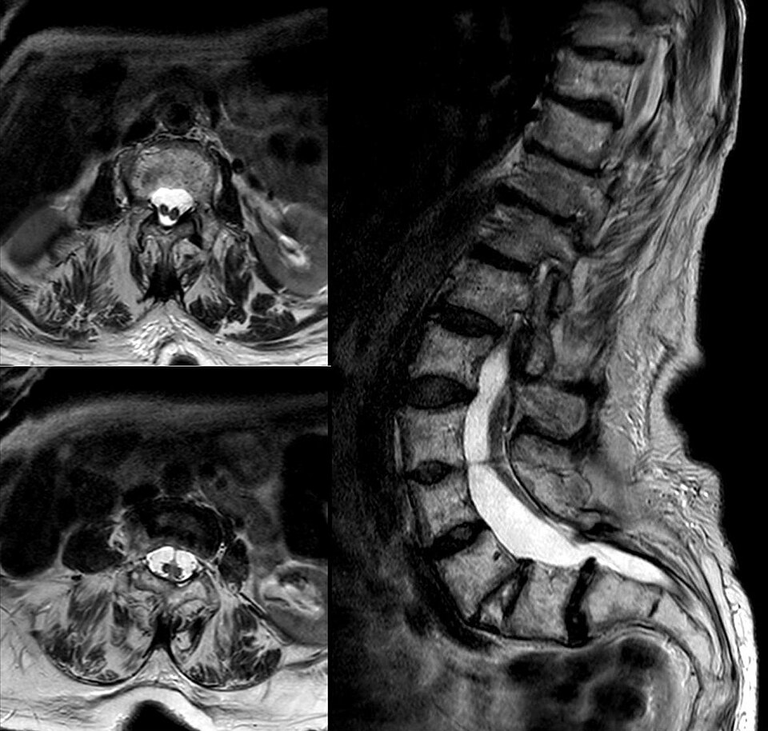

1) Description of Measurement
Diastematomyelia, also termed split cord malformation, is a congenital form of spinal dysraphism in which the spinal cord is longitudinally divided into two hemicords over a variable segment. The split is caused by an intervening osseous, cartilaginous, or fibrous septum within the spinal canal. Each hemicord may have its own central canal, nerve roots, and vascular supply. The condition frequently results in cord tethering, progressive neurological dysfunction, and associated vertebral anomalies. The term split cord malformation is now preferred, as it includes both classic diastematomyelia and diplomyelia within the same spectrum.
2) Instructions to Measure
3) Normal vs. Pathologic Ranges
4) Important References
Pang D, Dias MS, Ahab-Barmada M. Split cord malformation: Part I: A unified theory of embryogenesis for double spinal cord malformations. Neurosurgery. 1992 Sep;31(3):451-80. doi: 10.1227/00006123-199209000-00010. PMID: 1407428.
Naidich TP, Harwood-Nash DC. Diastematomyelia: hemicord and meningeal sheaths; single and double arachnoid and dural tubes. AJNR Am J Neuroradiol. 1983 May-Jun;4(3):633-6. PMID: 6410818; PMCID: PMC8334888.
Adelson P. Diastematomyelia. Encyclopedia of the Neurological Sciences. 2014;:996-7. doi:10.1016/b978-0-12-385157-4.00741-7
Huang SL, He XJ, Wang KZ, Lan BS. Diastematomyelia: a 35-year experience. Spine (Phila Pa 1976). 2013 Mar 15;38(6):E344-9. doi: 10.1097/BRS.0b013e318283f6bc. PMID: 23492975.
Weston MJ. Spinal abnormalities. In: Twining P, McHugo JM, Pilling DW, editors. Textbook of fetal abnormalities. 2nd ed. Edinburgh: Churchill Livingstone; 2007. p. 143–173. doi:10.1016/B978-0-443-07416-5.50012-5.
5) Other info....
Embryologically linked to persistent accessory neuroenteric canal during weeks 3–4, explaining its strong association with vertebral anomalies like hemivertebrae, butterfly vertebrae, block vertebrae, and congenital scoliosis, often a presenting clue. It needs surgical correction before scoliosis surgery to prevent neurologic injury.